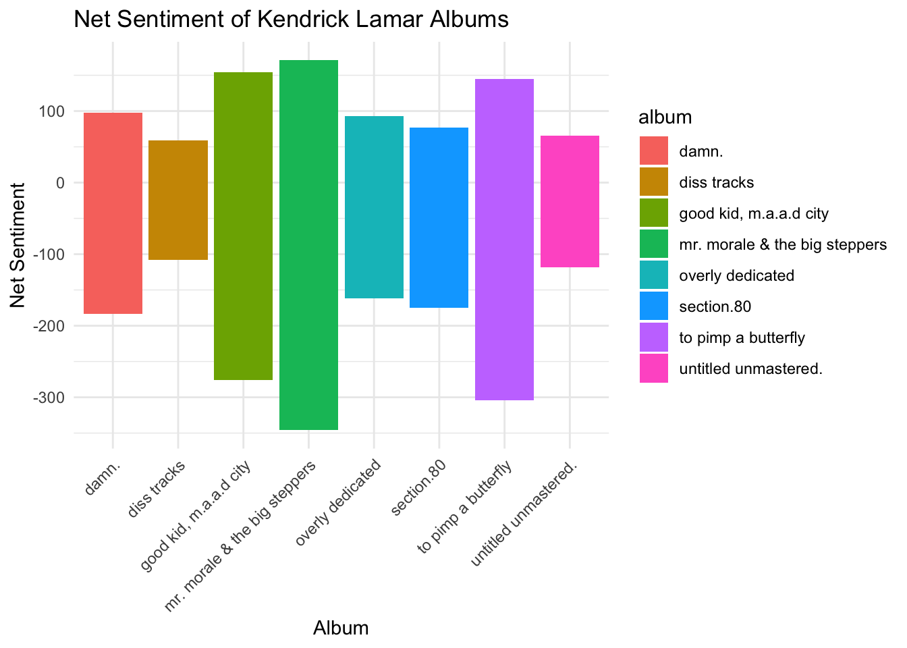
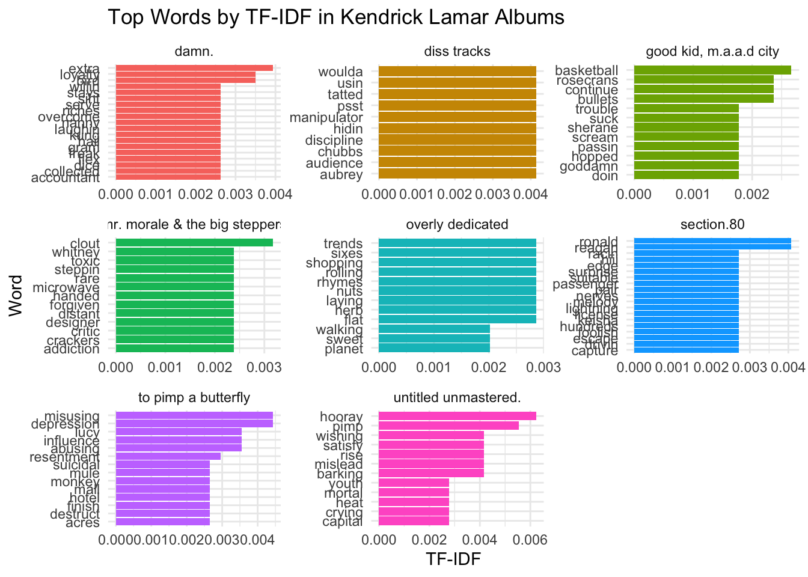

library(billboard)
library(tidyverse)
library(tidytext)
library(dplyr)
library(ggplot2)
library(wordcloud)
library(wordcloud2)
library(knitr)
library(sentimentr)
library(ggraph)
library(igraph)
library(RColorBrewer)Mini Project 4: Text Analysis
Overview
This mini project focuses on exploring the lyrics of Kendrick Lamar’s songs through various text analysis methods, including sentiment analysis, term frequency-inverse document frequency (TF-IDF), and word clouds.
Loading all packages needed
Loading data
kendrick_data <- read_csv("~/raniaabdulhafiz.github.io/mini_project4/kendrick_data.csv")
curse_words <- read_csv("~/raniaabdulhafiz.github.io/mini_project4/curse_words.csv")Using str_functions and regular expressions, tidy the data
tidy_lyrics <- kendrick_data %>%
unnest_tokens(word, lyrics) %>% #separate lyrics by word
anti_join(curse_words) %>%
filter(!word %in% stop_words$word) %>% #filter out stop words and create n
group_by(word) %>%
mutate(n = n()) %>%
distinct()
tidy_lyrics# A tibble: 15,805 × 10
# Groups: word [6,268]
track_name album release_date duration_ms popularity speechiness danceability
<chr> <chr> <date> <dbl> <dbl> <dbl> <dbl>
1 Growing A… Over… 2010-09-14 220995 52 0.366 0.586
2 Growing A… Over… 2010-09-14 220995 52 0.366 0.586
3 Growing A… Over… 2010-09-14 220995 52 0.366 0.586
4 Growing A… Over… 2010-09-14 220995 52 0.366 0.586
5 Growing A… Over… 2010-09-14 220995 52 0.366 0.586
6 Growing A… Over… 2010-09-14 220995 52 0.366 0.586
7 Growing A… Over… 2010-09-14 220995 52 0.366 0.586
8 Growing A… Over… 2010-09-14 220995 52 0.366 0.586
9 Growing A… Over… 2010-09-14 220995 52 0.366 0.586
10 Growing A… Over… 2010-09-14 220995 52 0.366 0.586
# ℹ 15,795 more rows
# ℹ 3 more variables: tempo <dbl>, word <chr>, n <int>tidy_lyrics <- tidy_lyrics %>%
mutate(across(everything(), ~ str_to_lower(.))) %>% #change all to lower case
filter(!str_detect(word, "\\d"), #remove all words that contain numbers
!str_detect(word, "[^a-zA-Z0-9 ]"), #remove all words that contain anything not a letter or number
str_length(word) > 3) #keep words longer than 3 letters
tidy_lyrics# A tibble: 13,887 × 10
# Groups: word [5,649]
track_name album release_date duration_ms popularity speechiness danceability
<chr> <chr> <chr> <chr> <chr> <chr> <chr>
1 growing a… over… 2010-09-14 220995 52 0.366 0.586
2 growing a… over… 2010-09-14 220995 52 0.366 0.586
3 growing a… over… 2010-09-14 220995 52 0.366 0.586
4 growing a… over… 2010-09-14 220995 52 0.366 0.586
5 growing a… over… 2010-09-14 220995 52 0.366 0.586
6 growing a… over… 2010-09-14 220995 52 0.366 0.586
7 growing a… over… 2010-09-14 220995 52 0.366 0.586
8 growing a… over… 2010-09-14 220995 52 0.366 0.586
9 growing a… over… 2010-09-14 220995 52 0.366 0.586
10 growing a… over… 2010-09-14 220995 52 0.366 0.586
# ℹ 13,877 more rows
# ℹ 3 more variables: tempo <chr>, word <chr>, n <chr>Sentiment analysis - bing sentiment
By performing sentiment analysis using the bing lexicon, the bar plot showing the net sentiment of each album gives a glimpse of the emotional tone of Kendrick’s music. I measured the positive and negative sentiments, and calculated the net sentiment by subtracting the number of negative words from the positive ones. We can see a pattern in the emotional tone of Kendrick’s albums over time, which indicating shifts in mood, themes, or messages from one album to the next. Rappers tend to release something new each time that reflects their personal experiences, but we tend to see a domination of positive tone and use of words in most of his albums.
bing_sentiment <- tidy_lyrics %>%
inner_join(get_sentiments("bing"), by = "word") %>%
count(album, sentiment) %>%
pivot_wider(names_from = sentiment, values_from = n, values_fill = 0) %>%
mutate(net_sentiment = positive - negative)
ggplot(bing_sentiment, aes(x = album,
y = net_sentiment,
fill = album)) +
geom_bar(stat = "identity") +
theme_minimal() +
theme(axis.text.x = element_text(angle = 45, hjust = 1)) +
labs(title = "Net Sentiment of Kendrick Lamar Albums",
x = "Album",
y = "Net Sentiment")
tf_idf
The TF-IDF plot identifies the most important and distinctive words in each album. Words with high TF-IDF values are unique to specific albums, revealing central concepts to each album’s lyrics. We can see that Kendrick’s focus shifts on particular subjects, whether political, social, or personal, across different stages of his career. This gives a deeper understanding of his artistic evolution and shifting in priorities. For instance, on his Diss Tracks, we can see that the word “audience” was used a lot, while in his album Untitled Unmastered, there was a mix of emotions “crying”, “mortal”, “hooray”. There is a shift in emotions based on the type of the album and the targeted audience.
tf_idf <- tidy_lyrics %>%
count(album, word, sort = TRUE) %>%
bind_tf_idf(word, album, n) %>%
arrange(desc(tf_idf))
tf_idf %>%
group_by(album) %>%
slice_max(tf_idf, n = 10) %>%
ungroup() %>%
ggplot(aes(x = reorder_within(word, tf_idf, album),
y = tf_idf, fill = album)) +
geom_col(show.legend = FALSE) +
facet_wrap(~album, scales = "free") +
coord_flip() +
scale_x_reordered() +
theme_minimal() +
labs(title = "Top Words by TF-IDF in Kendrick Lamar Albums",
y = "TF-IDF",
x = "Word")
Wordcloud
The word cloud shows the most frequent words in Kendrick Lamar’s lyrics. Larger words appear more frequently, while smaller words are less common, the number of time a word is repeated is shown as well. This visual makes it easy to identify dominant themes in Kendrick’s lyrics. Words like “life,” “feel,” “free,” and “world” could appear large, indicating their frequent use in his lyrics, which could point to overarching themes in his music. The color and shape of the word cloud are added as a way of visually engaging the viewer.
tidy_lyrics %>%
count(word, sort = TRUE) %>%
wordcloud2(size = 1.5, color = "random-light", backgroundColor = "black")